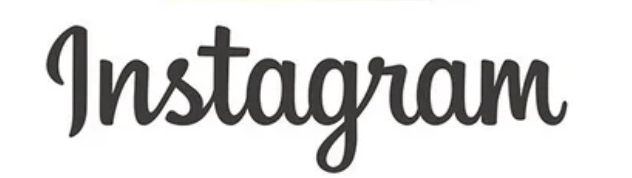

K.EMUでは毛穴ケア、ニキビケア、エイジングケアに特化したフェイシャルメニューを始めました。脱毛とも相性が良く、毛穴がさらに目立たなくなるなど相乗効果があります。また、当サロンは銀座プロノビセアクリニックと提携しており、医師監修のもとエビデンスに基づき開発された最先端のマシンや美容成分を配合した製品を取り扱っております。オンライン診療を受診していただくことで美肌薬、ダイエット薬などの処方も可能となっております。
K.EMUの
フェイシャルメニュー
オプション

プラズマの効果をさらに高める！炭酸パック
炭酸パックに含まれる活性種にプラズマを反応させ美容液の導入効果がさらにUPします。またCO2とプラズマを同時に照射することで殺菌効果も高まりニキビケアや肌トラブルの改善に、より効果を発揮します。
ご利用の流れ
料金プラン
高額契約なし！
都度払いのため安心です！
新規ご来店
初回に一度のみご利用可能
プラズマミスト
5,500円
ハーブピーリング
5,500円
ララピール
8,800円
【セットメニュー】
プラズマミスト×ハーブピーリング
7,700円
プラズマミスト×ララピール
11,000円
【コースメニュー】
本気のニキビケアコース
プラズマミスト/ハーブピーリング/幹細胞培養上清液
13,200円
本気の美肌・エイジングケアコース
プラズマミスト/ララピール/幹細胞培養上清液
16,500円
※セルフ脱毛でご来店の方もフェイシャルメニューが初回の場合は初回価格でご利用いただけます
2回目以降
プラズマミスト
7,700円
ハーブピーリング
7,700円
ララピール
11,000円
【セットメニュー】
プラズマミスト×ハーブピーリング
11,000円
プラズマミスト×ララピール
14,300円
【コースメニュー】
本気のニキビケアコース
プラズマミスト/ハーブピーリング/幹細胞培養上清液
16,500円
本気の美肌・エイジングケアコース
プラズマミスト/ララピール/幹細胞培養上清液
19,800円
オプション
幹細胞培養上清液
※プラズマミスト専用オプション
5,500円
炭酸パック
※プラズマミスト専用オプション
2,200円
ハイドロジェリーマスク
2,200円
※表示価格は全て税込です
18歳未満のお客様へ
フェイシャルメニューは13歳以上の方にご利用していただけます。高校生以上で18歳未満の方は下部の親権者同意書をダウンロードしていただき、親御様もしくは親権者様の記入捺印をもらってご持参ください。中学生のお子様は親御様もしくは親権者様が同室のうえ施術されるのであればご利用可能です。
施術禁忌事項
下記に該当する方は施術が行えません
フェイシャルメニューを
施術できない方
- 妊娠中、授乳中の方
- 12歳以下の方
- 美容に非現実的な期待をお持ちの方
- 飲酒中の方
- 日焼け直後の方、過剰に日焼けしている方
- 予防接種前後2週間以内の方
- 体調のすぐれない方
- ケロイド体質の方
- 施術部位に傷口、アレルギー、炎症、重篤な皮膚疾患がある方
- 伝染性皮膚炎（単純ヘルペス・とびひ・水イボなど）、感染症などの持病をお持ちの方
- 現在治療中の持病をお持ちの方（医師の許可が必要と思われるもの...ガン、重度の心臓、肝臓、腎臓等内臓疾患、てんかん、重度の高血圧、重度糖尿病、透析、自己免疫疾患、重度の精神疾患など）
- 外科手術、美容整形手術後6ヶ月以内の方
- 医療用レーザー治療後、ダーマペン、ポテンツァ施術後3ヶ月以内の方
- アートメイク、プチ整形、フォトフェイシャル、剥離のあるピーリング、ヒアルロン酸、ボトックス施術後１ヶ月以内の方
- 脱毛、カッサ、美容点滴施術後2週間以内の方
- 施術部位にステロイド、レチノール、トレチノイン、ハイドロキノン等使用後2週間以内の方
- クリニック等で処方された化粧品(ゼオスキンなど)をご使用中の方
プラズマミストを
施術できない方
フェイシャルメニュー禁忌事項に加えて以下に該当する方は施術が行えません
- てんかん、光線過敏症の持病をお持ちの方
- 光線過敏症を起こす副作用のあるお薬を服用中の方
- ペースメーカー、除細動器、人工内耳などの機器を入れらている方
- ステロイド系ホルモン剤の長期使用や肝臓機能障害で毛細血管拡張をおこしている方
- 施術部位に金属プレート、シリコン、プロテーゼ、糸リフト、金の糸を使用されている方
施術の注意事項
ご利用に当たっての
注意事項
- 効果には個人差があります。部位によっては効果が実感できないことがあります。
- プラズマミストの施術は部位に応じてチクチクとした痛みや、軽い熱感を伴うことがございます。お痛みがある場合は我慢せずお申し付け下さい。
- プラズマの照射は火傷のリスクがあります。お痛みや熱さは我慢せずお申し付けください。
- ララピールはアートメイクされている方は色が落ちてしまう可能性があります。
- 施術中にお肌に異常がある場合など、スタッフがこれ以上施術不可と判断した場合は施術途中であっても施術を中止、中断する場合がございます。
施術後の注意事項
- 施術後は肌が乾燥しますので十分な保湿と紫外線対策を行ってください。
- 施術後、好転反応（デトックス反応）といって乾燥、赤み、発疹、かゆみ、肌荒れなどが生じる場合があります。（特に肌が弱い方は赤みが出やすくなります）これは新陳代謝が早まり起こるもので一時的な症状です。通常数日程度で治るので日焼けを避け、保湿、鎮静を行い様子をみてください。
- 施術部位はこすったりせず、スクラブ洗顔などの使用もお控えください。
- 当日の入浴は控えてシャワーのみにしてください。
- 当日の飲酒はお控えください
- サウナや岩盤浴、激しい運動は数日お控えください。
- 代謝UPのため、多めの水分補給を心がけてください。
プラズマミスト
施術後の注意事項
フェイシャルメニュー施術後の注意事項に加えてプラズマミスト施術後は以下の注意事項があります
- プラズマミスト照射後はお化粧や日焼け止めの塗布は2時間空けてください。
- プラズマミスト照射後は火照りやヒリヒリ感が生じる場合があります。当日はシートマスクなどでしっかりと鎮静を行ってください。
ララピール
施術後の注意事項
フェイシャルメニュー施術後の注意事項に加えてララピール施術後は以下の注意事項があります
- お化粧は施術後半日空けてください。
- 翌朝までは水かぬるま湯のみで洗顔していただくことを推奨します。
- アルコールが含まれている化粧品（特に香水やミストなど）は刺激になることがありますのでお控えください。
- 施術後1週間はビタミンA系の施術、または化粧品をお控えください。
- お顔剃りや、皮膚に刺激になるもの(スクラブ洗顔、高濃度ビタミン美容液、ホームピーリング、ニキビ治療薬など)も１週間あけてから、肌コンディションをみてご使用ください。
よくある質問 Q&A
Q
プラズマミストの施術は痛みがありますか？
A
痛みの感じ方は個人差もありますがプラズマミストは基本的には温かさを感じる程度です。出力レベルが調整できるので痛みの状態を見ながら施術を行っていきます。
Q
ダウンタイムはありますか？
A
基本的にはありませんが、プラズマミストの施術後2時間はお肌の吸収力が上がっているため日焼け止めや化粧はしないでください。
Q
男性も利用できますか
A
当サロンは男性もご利用可能です。身だしなみを整えることで清潔感のある印象になります。ぜひご利用ください
Q
子どもや未成年者は利用できますか?
A
フェイシャルメニューは13歳以上の方にご利用していただけます。高校生以上で18歳未満の方は親権者同意書をダウンロードしていただき、親御様もしくは親権者様の記入捺印をもらってご持参ください。中学生のお子様は親御様もしくは親権者様が同室のうえ施術されるのであればご利用可能です。
Q
時間はどのくらいかかりますか？
A
クレンジングや洗顔、お仕上げの時間も合わせますと1つのメニューで60分ほどのお時間をいただきます。初回はカウンセリングやご説明がございますので＋30分ほどのお時間をいただきます
Q
どれくらい間隔を空ければいいですか？
A
最短施術間隔は、プラズマミスト1週間、ハーブピーリング1週間です。セットで施術される場合は一番長い施術間隔に合わせてください。また顔脱毛後は2週間後にフェイシャル施術可能となります。
Q
理想の施術頻度はどのくらいですか？
A
ニキビ肌や肌荒れなどの肌質改善を目指すのであれば5〜6回は最短施術間隔での施術を行い、その後は3週間〜1ヶ月に一度の施術をおすすめします。
Q
どのくらいで効果が現れますか？
A
個人差もありますが、プラズマミストやハーブピーリングは一度でもお顔のくすみが取れたり、毛穴が目立たなくなったり肌触りがよくなったりとの効果を感じていただけます。定期的に行うことで肌質を改善し、より効果を感じていただけます。

投稿投稿
投稿投稿
投稿投稿